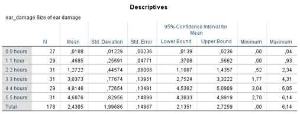

Metainformation
| Tag | Value |
|---|---|
| file | Inferential_Statistics_vufsw-oneway_anova-1371-nl_vufsw-oneway_anova-1371-nl |
| name | vufsw-oneway anova-1371-nl |
| section | inferential statistics/parametric techniques/anova/oneway anova |
| type | schoice |
| solution | FALSE, FALSE, TRUE, FALSE |
| Type | interpreting output |
| Program | NA |
| Language | dutch |
| Level | statistical reasoning |
Question
De onderstaande analyse gaat over de mogelijke schadelijke effecten van
mobiele telefoons. Field stelt zich een fictief experiment voor waarin
proefpersonen een mobiele telefoon op hun hoofd krijgen vastgebonden en
waarin deze telefoon een vast aantal uren per dag wordt aangezet. Na zes
maanden wordt de omvang van de eventuele schade gemeten in de buurt van
het oor (variabele: ear_damage, amount of ear damage). Er worden zes
groepen onderscheiden, die 0, 1, 2, 3, 4, of 5 uren per dag (variabele:
usage) zijn blootgesteld aan deze ‘phone microwaves’.



Wat is de alternatieve H1 hypothese van deze ANOVA?
- FALSE: H1: alle zes groepen wijken van elkaar af in de gemiddelde ‘ear-damage’
- FALSE: H1: alle zes groepen hebben dezelfde gemiddelde ‘ear-damage’
- TRUE: H1: ten minste één van de zes groepen wijkt af in gemiddelde ‘ear-damage’
- FALSE: H1: naarmate de groep meer uren is blootgesteld aan de mobiele telefoon, des groter de ‘ear-damage’ is
- False
- False
- True
- False